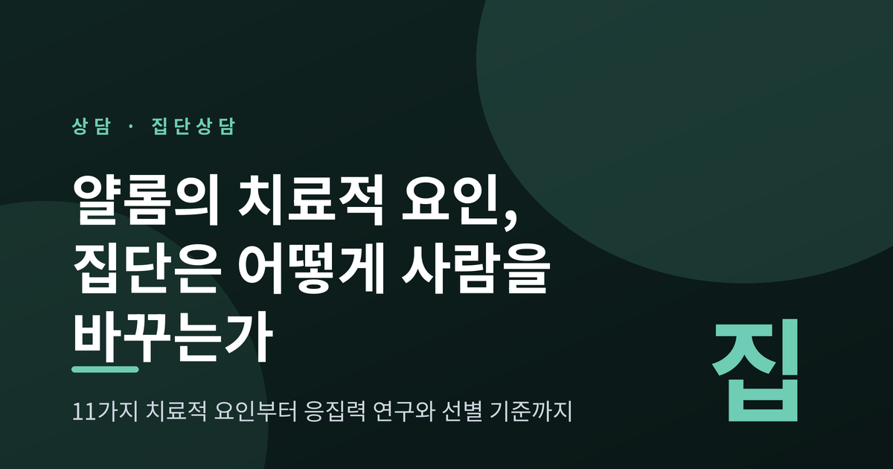
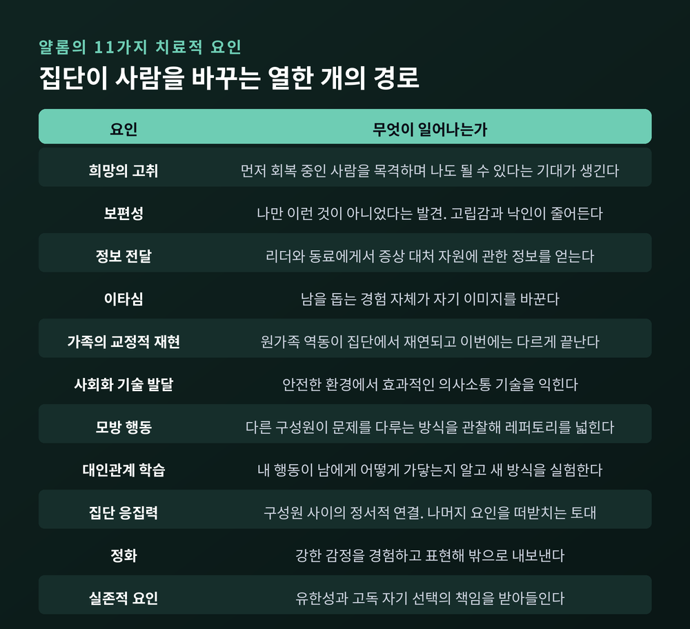
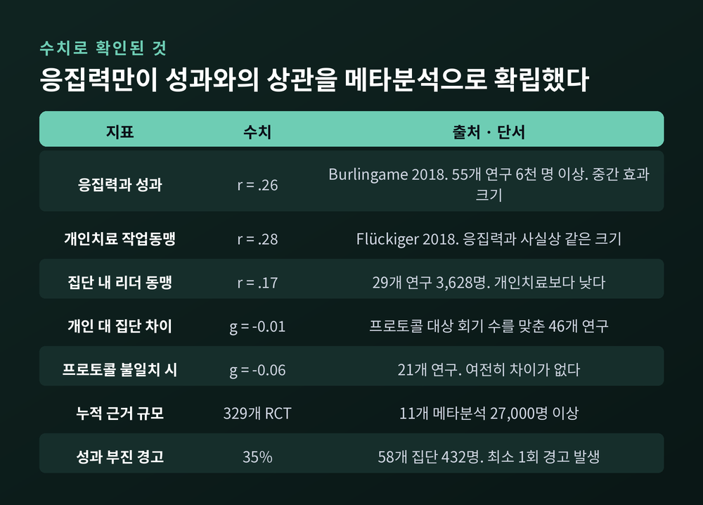
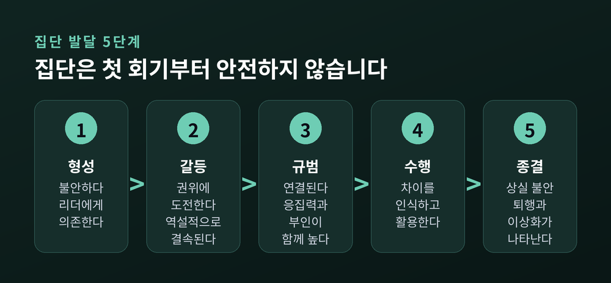
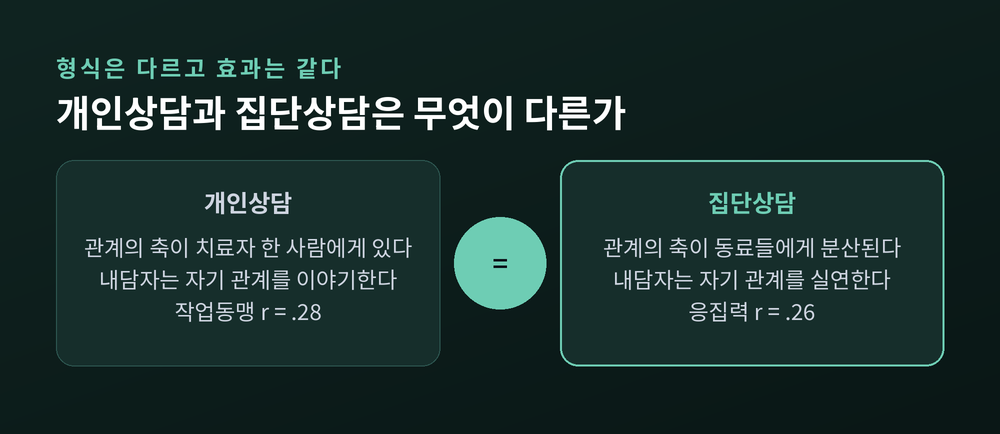
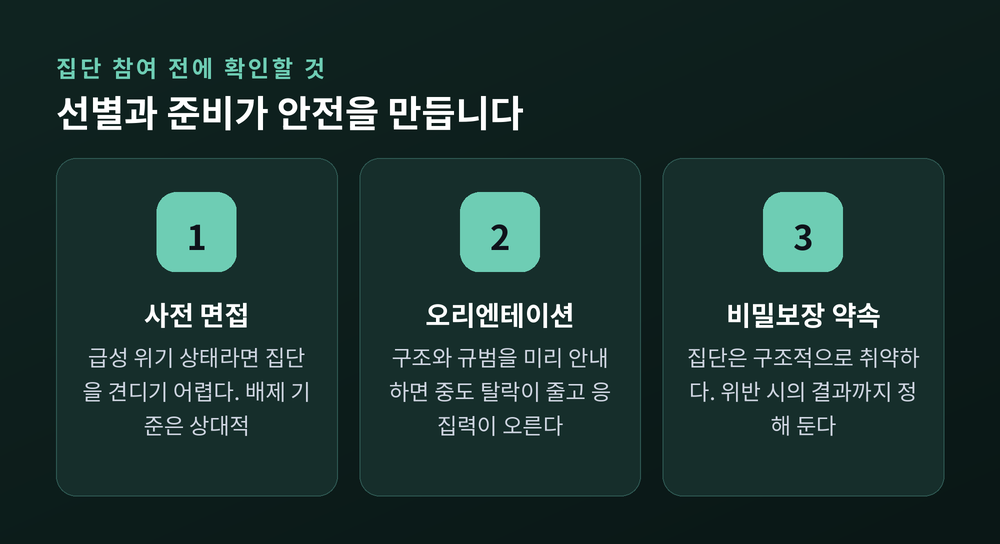

지금-여기와 사회적 축소판부터 응집력 연구, 집단 발달 5단계와 선별 기준까지
이번 글에서는 집단상담이 사람을 어떻게 변화시키는지를 정리해 보겠습니다. 어빈 얄롬이 제시한 11가지 치료적 요인을 축으로 삼되, 그중 무엇이 실제로 효과가 큰지에 대한 연구 근거까지 함께 살펴보려 합니다. 집단이 늘 이롭기만 한 것은 아니라는 점도 마지막에 다루겠습니다.

먼저 세 줄로 요약합니다.
집단상담의 표준 교재는 얄롬과 레츠의 『집단정신치료의 이론과 실제』(6판, 2020)입니다. 이 책은 집단이 사람을 바꾸는 경로를 열한 가지로 나눕니다.
희망의 고취는 먼저 회복 중인 사람을 눈으로 확인하면서 생기는 기대입니다. 보편성은 "나만 이런 게 아니었다"는 발견이고요. 정보 전달은 리더와 동료에게서 증상과 대처에 관한 정보를 얻는 것입니다.
이타심은 방향이 반대입니다. 남을 돕는 경험 자체가 자기 이미지를 바꿉니다. 초기 가족의 교정적 재현은 원가족에서 익힌 역동이 집단 안에서 되풀이되되, 이번에는 다른 결말을 맞는 경험입니다. 사회화 기술의 발달은 안전한 환경에서 대화 기술을 익히는 과정이고, 모방 행동은 다른 구성원이 문제를 다루는 방식을 관찰해 자기 레퍼토리를 넓히는 일입니다.
남은 넷이 특히 중요합니다. 대인관계 학습은 내 행동이 남에게 어떻게 가닿는지 피드백으로 아는 과정(투입)과, 새로운 관계 방식을 집단 안에서 실제로 실험해 보는 과정(산출)으로 나뉩니다. 집단 응집력은 구성원 사이의 정서적 연결이며, 나머지 요인들이 작동하도록 떠받치는 토대입니다. 정화는 강한 감정을 경험하고 밖으로 내보내는 일, 실존적 요인은 삶의 유한성과 고독, 자기 선택의 책임을 받아들이는 일입니다.
미국집단심리치료학회(AGPA)의 실무지침은 여기에 자기이해를 별도 항목으로 더해 열거하기도 합니다.

여기서부터가 흥미롭습니다. 근거의 종류에 따라 답이 갈리기 때문입니다.
첫째, 참여자에게 직접 물어본 연구가 있습니다. 얄롬 연구진이 1968년 성공적으로 치료된 구성원들에게 중요도를 배열하게 했더니 상위 다섯은 대인관계 학습(투입), 정화, 응집력, 자기이해, 대인관계 학습(산출) 순이었습니다. 이후 누적된 연구들을 유형화한 리뷰에서도 정화, 자기이해, 대인관계 투입이 가장 자주 상위에 올랐습니다. 반대로 가족 재현과 조언, 동일시는 낮게 평가되는 편입니다.
둘째, 성과와의 상관을 계산한 메타분석이 있습니다. 이 방식으로 수치가 확립된 요인은 사실상 응집력 하나뿐입니다. 벌링게임 연구진이 55개 연구, 6천 명 이상의 집단 구성원을 분석한 결과 그 가중평균 상관은 r = .26이었습니다. 개인치료에서 작업동맹과 성과의 상관이 r = .28인 것과 거의 같은 크기입니다.
조절 변인도 눈여겨볼 만합니다. 리더가 구성원 간 상호작용을 강조할수록, 그리고 집단이 오래 지속될수록 응집력과 성과의 관계가 강했습니다. 이론적 지향으로는 대인관계 지향 집단에서 상관이 가장 높았습니다.
한 가지 대비가 있습니다. 개인치료에서는 치료자와의 동맹이 관계의 전부입니다. 집단에서는 리더와의 동맹이 r = .17로 더 낮게 나옵니다. 관계의 무게중심이 치료자에게서 동료에게로 옮겨 가 있다는 뜻입니다.
다만 순위 연구와 상관 연구는 재는 대상이 다릅니다. 어느 하나를 정답으로 삼기는 어렵습니다.

얄롬 이론의 중심에는 사회적 축소판(social microcosm)이라는 개념이 있습니다.
사람은 집단 안에서도 바깥에서 하던 습관을 되풀이합니다. 늘 조언만 하던 사람은 여기서도 조언을 합니다. 늘 물러서던 사람은 여기서도 물러섭니다. 효과적인 행동도, 그렇지 않은 행동도 여덟아홉 명 앞에 그대로 드러납니다. 결국 집단은 그 사람의 대인관계 세계가 축소되어 재현되는 무대가 됩니다.
그래서 초점이 지금-여기에 놓입니다. 얄롬은 이를 두고 치료적 힘의 주된 원천이라고 표현했습니다. 축소판은 구성원들이 실제로 서로 접촉하고 있을 때만 활성화되기 때문입니다. 지난주 회사에서 있었던 일보다, 방금 이 방에서 누가 말을 끊었을 때 내가 어떤 표정을 지었는지가 더 중요한 재료가 됩니다.
대인관계 학습이 개인상담으로는 대체하기 어려운 요인이라고 평가받는 이유도 여기 있습니다. 개인상담에서 내담자는 자기 관계를 이야기합니다. 집단에서는 자기 관계를 실연합니다.
가상의 장면 하나를 들어 보겠습니다. 여러 사례를 일반화해 각색한 예시입니다.
한 참여자가 매 회기 다른 사람의 고민에 먼저 해법을 제시합니다. 유능하고 친절합니다. 그런데 정작 자기 이야기 차례가 오면 시계를 봅니다. 여덟 번째 회기에서 한 구성원이 조심스럽게 말합니다. "저는 당신에게 늘 도움을 받는데, 당신을 알지는 못하는 것 같습니다." 그 순간 방 안의 공기가 바뀝니다. 이 피드백은 바깥에서는 좀처럼 받을 수 없는 종류의 정보입니다. 회사에서도, 가족 안에서도 사람들은 대개 이런 말을 삼키기 때문입니다.
집단은 첫 회기부터 안전하지 않습니다. AGPA 지침이 종합한 발달 모형은 다섯 단계로 나뉩니다.
형성 단계에서 구성원은 불안하고, 변화의 주체를 자기 자신이 아니라 리더에게서 찾습니다. 갈등 단계에서는 진전이 없다는 불만이 쌓이고 리더의 권위에 대한 도전이 일어납니다. 역설적으로 이 투쟁이 구성원들을 결속시킵니다. 규범 단계에서는 연결이 만들어지고 응집력이 높아집니다. 다만 이 시기에는 부인(denial)도 함께 높아진다는 점을 지침은 분명히 언급합니다.
수행 단계에 이르면 구성원들이 서로의 차이를 인식하고 활용하기 시작합니다. 마지막 종결 단계에서는 상실 불안 탓에 퇴행과 갈등이 다시 나타나기도 합니다. 이때 구성원들은 인생의 다른 상실을 꺼내 놓고, 집단을 지나치게 이상화하거나 반대로 평가절하합니다.
버나드와 매켄지는 대부분의 발달 모형이 공유하는 가정 하나를 짚었습니다. 상호작용의 복잡성은 시간에 따라 늘어나되, 뒤로 물러서는 시기도 반드시 있다는 것입니다. 집단이 흔들리는 것이 곧 실패는 아닌 셈입니다.

효과 자체는 다르지 않습니다.
25년치 연구를 모은 메타분석에서, 치료 프로토콜과 대상자와 회기 수를 동일하게 맞춘 46개 연구의 개인 대 집단 차이는 g = −0.01이었습니다. 프로토콜이 완전히 같지 않은 21개 연구에서도 −0.06에 그쳤습니다. 만족도, 관해율, 호전율, 조기 종결률에서도 차이가 없었습니다. 형식 간 차이가 나타났던 경우는 개인치료 쪽이 회기를 더 많이 받았을 때였고, 회기 수 자체가 성과를 예측했습니다.
근거의 규모도 작지 않습니다. 11개의 메타분석, 329개의 무작위대조시험, 27,000명 이상의 환자가 축적되어 있습니다. 무처치 대비 효과크기는 불안장애와 강박장애, 우울에서 크게 나타났고 섭식장애와 외상후스트레스장애에서 중간, 물질사용장애와 조현병에서 작게 나타났습니다. 약물치료와의 비교에서는 유의한 차이가 없었습니다.
얄롬과 레츠는 집단치료를 세 가지 E로 부릅니다. 무처치 대비 효과적이고(Effective), 개인치료와 동등하며(Equivalent), 시간과 비용 면에서 효율적이라는(Efficient) 뜻입니다. 미국심리학회는 2018년에야 집단심리치료를 독립된 전문 영역으로 인정했습니다.
그런데 현실은 조금 다릅니다. 개인 개업 장면에서 집단치료가 차지하는 비중은 많아야 5% 수준입니다. 주요 진료지침들도 집단치료를 예외적인 경우에만 권고하고 있습니다. 근거와 관행 사이의 이 간격은 아직 충분히 설명되지 않았습니다.

집단은 안전한 곳이기만 하지는 않습니다. 이 점을 처음 체계적으로 조사한 것도 얄롬 본인이 참여한 연구였습니다. 리버먼, 얄롬, 마일스는 1971년 참만남집단 연구에서 일부 참여자가 지속적인 심리적 손상을 입는다는 사실을 보고했고, 여기에 casualty라는 이름을 붙였습니다.
심리치료 전반으로 보면 메타분석들은 대략 5~20%의 환자에게서 이상반응을 예상해야 한다고 봅니다. 증상 악화, 새로운 증상의 출현, 관계 악화, 치료 의존 같은 것들입니다. 우울에 대한 심리치료의 악화율 중앙값은 4% 수준이며, 그럼에도 통제군보다는 악화 확률이 61% 낮았습니다.
집단에는 집단 특유의 위험이 더해집니다.
그래서 선별과 준비가 중요합니다. 배제 기준은 절대적이지 않고 상대적입니다. 다만 급성 고통 상태에 있는 사람은 집단을 견디기 어렵고, 다른 구성원에게 지지를 돌려주기도 어렵습니다. 낮은 치료 동기, 규칙 비순응, 타인과 연결될 역량의 부재도 상대적 금기로 봅니다.
선별에는 개별 면접과 소집단 체험, 표준화된 질문지가 쓰입니다. 근거상 외향성과 성실성이 높으면 성공을, 신경증 성향이 높으면 치료 실패를 예측하는 경향이 있습니다. 구조와 목표, 출석 규범을 미리 안내하는 사전 준비 절차는 중도 탈락을 줄이고 출석률을 높여 결국 응집력을 끌어올립니다.
구성에도 균형이 필요합니다. 동질성이 충분해야 응집력이 생기고, 이질성이 충분해야 집단이 바깥 세계의 축소판으로 기능합니다. 집단 크기는 대개 7~10명, 회기 길이는 90~120분이 표준으로 제시됩니다.

집단 리더는 여덟에서 열 명의 진행 상황을 동시에 살펴야 합니다. 연구는 이것이 쉽지 않다고 말합니다. 치료자의 변화 예측은 참여자 자기보고 자료와 잘 맞지 않았습니다.
대학상담센터 58개 집단, 432명을 대상으로 한 군집무작위 연구에서는 참여자의 35%가 치료 과정 중 최소 한 번은 성과 부진 경고를 발생시켰습니다. 반면 진전 상황과 치료 관계에 대한 피드백을 리더에게 제공한 집단에서는 악화 사례가 줄고 전반적 호전이 늘었습니다.
집단의 힘은 리더의 통찰만으로 유지되지 않습니다. 측정하고 되먹이는 장치가 함께 있어야 합니다.
정리하면 이렇습니다.
집단상담이 사람을 바꾸는 힘은 신비한 무엇이 아닙니다. 자기 대인관계 패턴이 실시간으로 드러나고, 그것을 바깥에서는 듣기 어려운 방식으로 되돌려 받고, 그 되돌림을 견딜 만큼 안전한 연결이 유지되는 구조. 이 세 가지가 겹치는 자리에서 변화가 일어납니다.
"집단은 사람을 고치지 않습니다. 사람이 자기를 보게 만들 뿐입니다."
다만 이 글은 정보를 정리한 것이지 진단이나 치료를 대신하지 않습니다. 우울이나 불안, 대인관계의 어려움이 일상에 지장을 줄 만큼 이어지고 있다면 혼자 판단하지 마시고 상담심리사나 정신건강 전문가와 상의하시길 권합니다. 집단상담에 참여할 계획이라면 사전 면접과 오리엔테이션을 제공하는 곳인지 미리 확인해 보시면 좋겠습니다.
집단이 정말 사람을 바꾸느냐고 물으신다면, 조건이 갖춰졌을 때는 그렇다고 답하겠습니다.